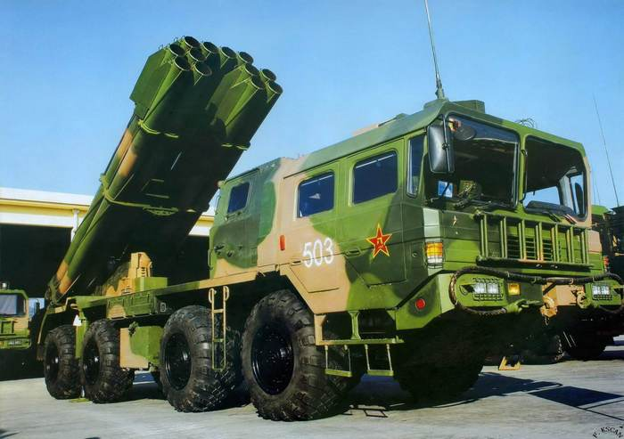
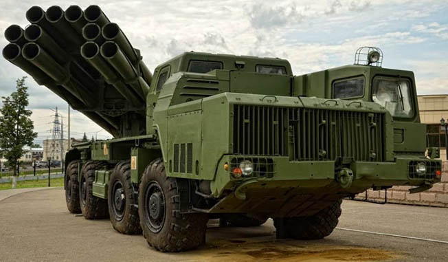
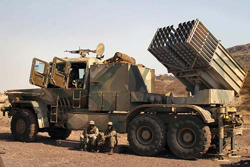
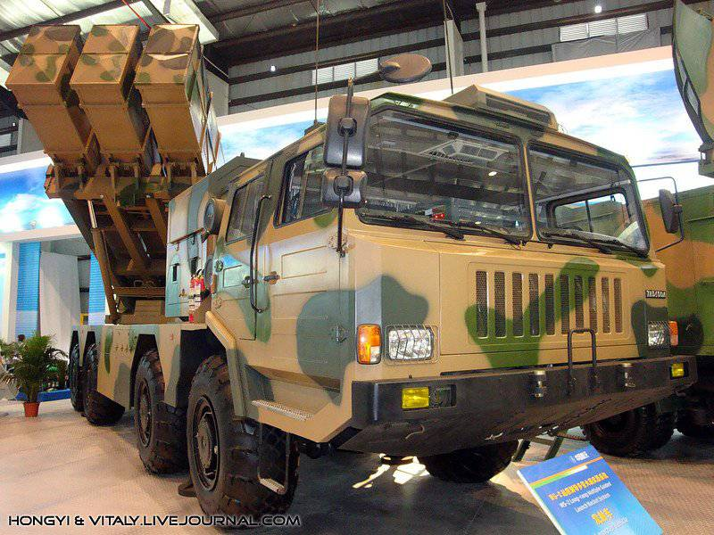
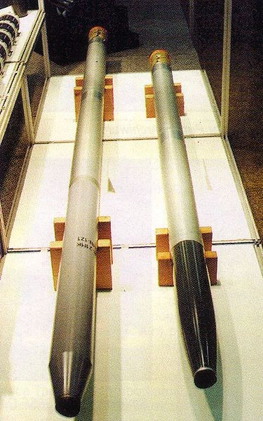
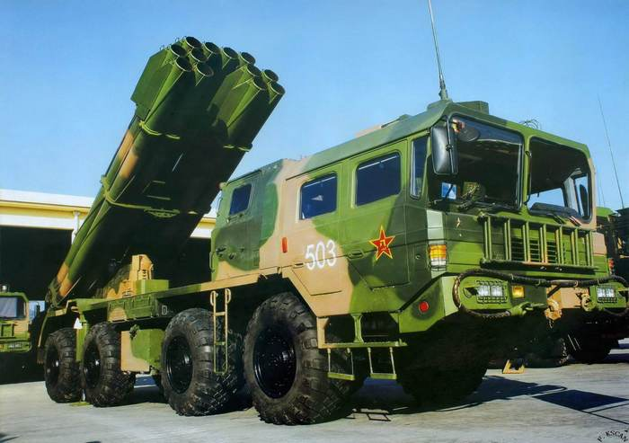
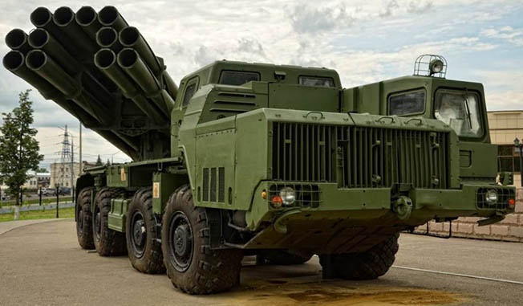
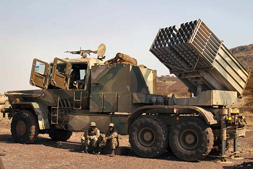
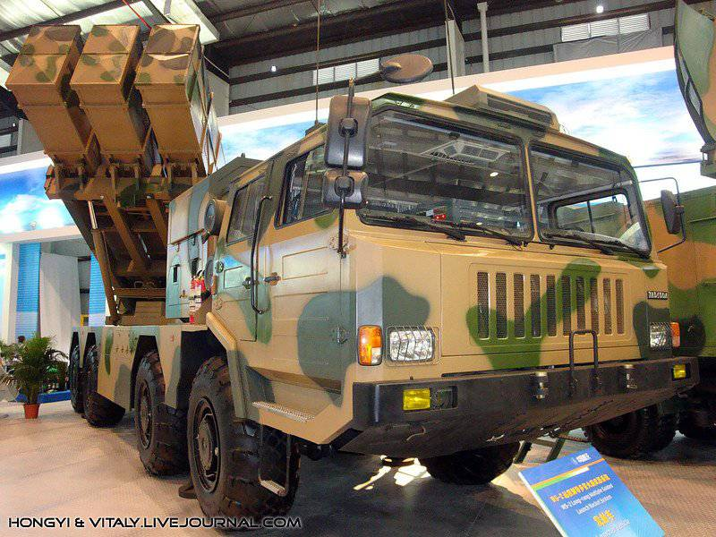
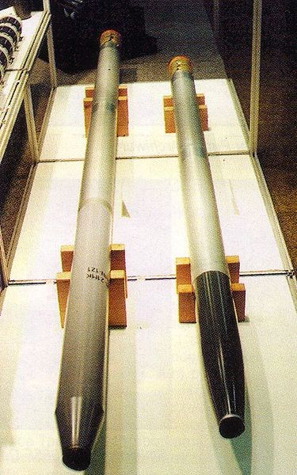

Что такое РСЗО?
Реактивная система залпового огня (РСЗО) — комплекс ракетного вооружения, включающий многозарядную пусковую установку и реактивные снаряды (неуправляемые ракеты, реактивные глубинные бомбы), а также вспомогательные средства (транспортная или транспортно-заряжающая машины) и другое оборудование. РСЗО относится к реактивной артиллерии.
Основной задачей РСЗО является борьба с танковыми группировками, войсками, рассредоточенными на значительных площадях, поражение прифронтовых ВПП, дистанционное минирование местности. Системы РСЗО состоят на вооружении сухопутных войск, военно-воздушных сил и военно-морских флотов многих стран.
Применение реактивного двигателя в составе реактивного снаряда практически исключает действие силы отдачи при выстреле, что позволяет конструировать простые по устройству, лёгкие и сравнительно компактные многоствольные пусковые установки. Пусковые установки (ПУ) РСЗО могут устанавливаться на самоходные (колёсные и гусеничные) и буксируемые шасси, самолёты, вертолёты и корабли. В России самоходные ПУ называют боевыми машинами реактивной артиллерии, ПУ РСЗО устанавливаемые на самолётах (вертолётах) — пусковыми устройствами, а на кораблях — реактивными бомбомётными установками (существуют корабли с обычными ПУ РСЗО для стрельбы по наземным целям). Современные РСЗО имеют калибр снарядов до 425 миллиметров, максимальную дальность стрельбы до 45 километров и более (вплоть до 400 километров на отдельных образцах), несут от 4 до 50 реактивных снарядов, каждый из которых имеет свою отдельную направляющую (рельсовую или трубчатую) для запуска.
Многозарядность РСЗО определяет высокую огневую производительность и возможность одновременного поражения целей на значительных площадях, что вместе с внезапностью, достигаемой залповой стрельбой обеспечивает высокий эффект воздействия на противника. Основным недостатком систем реактивной артиллерии является сравнительно высокое рассеивание снарядов. В современных условиях для устранения этого недостатка на реактивные снаряды стали устанавливать системы управления полетом, корректирующие траекторию движения снаряда (например, инерциального типа и инерциальную, комбинированную с системой радиоуправления на конечном участке траектории — на российской РСЗО 9К58 «Смерч» и инерциальную комбинированную со спутниковой системой — на снарядах типа GMLRS американской РСЗО M270 MLRS).
В качестве предка современных РСЗО называют многозарядную корейскую повозку Хвачха, разработку которой относят к XV веку, к временам правления короля Седжона Великого.
Первые действительно успешные попытки массированного боевого применения неуправляемых реактивных снарядов относятся к началу XIX века, когда около 200 пороховых ракет были выпущены в течение получаса при нападении англичан на Булонь в 1806 году, а также к так называемой «бомбардировке Копенгагена» в 1807 году. Применялись они и в англо-американской войне 1812—1815 годов и во время Наполеоновских войн, однако, несмотря на это, недостатки первых ракет привели к тому, что к середине XIX века интерес к ним как к оружию значительно снизился.
Возрождение неуправляемых реактивных снарядов как оружия связано с разработкой в СССР Реактивным научно-исследовательским институтом (РНИИ) в период 1927—1937 годов реактивных снарядов РС-82 и РС-132, которые были приняты на вооружение РККВФ. РС-82 летом 1939 года на истребителях И-16 и И-153 впервые успешно применялись по воздушным целям в боях на реке Халхин-Гол. В ходе советско-финской войны (1939—1940 годы) 6 двухмоторных бомбардировщиков СБ были оснащены пусковыми установками для ракет РС-132. Пуски ракет РС-132 производились по наземным целям.
В 1939—1941 годах в РНИИ была создана многозарядная пусковая установка БМ-13, смонтированная на шасси грузового автомобиля ЗИС-6, которая 21 июня 1941 года была принята на вооружение, получив первое боевое крещение в середине июля 1941 года.
В послевоенный период одним из наиболее известных случаев боевого применения РСЗО является массированное применение советскими войсками систем «Град» в советско-китайском пограничном конфликте на острове Даманский. Так же РСЗО «Град» использовался Вьетнамом в войне против войск США и афгано-советскими войсками против мятежников в Афганистане.
Реактивная артиллерия активно применяется в современных конфликтах. На вооружении разных армий и даже различных вооруженных мятежников состоят практически все созданные в послевоенное время РСЗО. В частности РСЗО применяют обе стороны в военном конфликте на востоке Украины, в войне в Сирии.
В современных условиях основными направлениями совершенствования РСЗО становятся: создание самонаводящихся и суббоеприпасов, повышение точности стрельбы за счет сопряжения РСЗО с современными системами разведки и целеуказания, увеличение дальности стрельбы, наращивание огневой производительности за счет увеличения калибра и автоматизации процесса заряжания, расширение номенклатуры боеприпасов.
 








